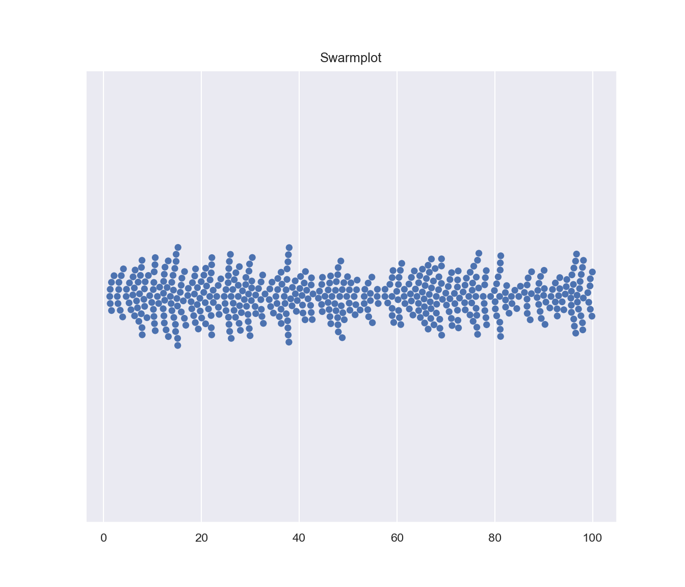
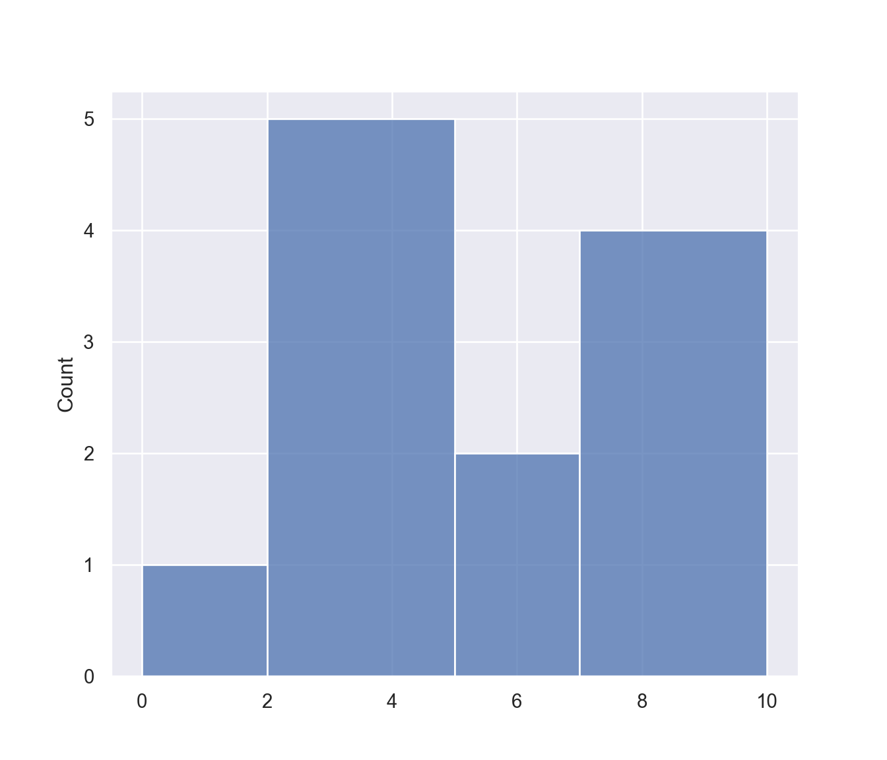
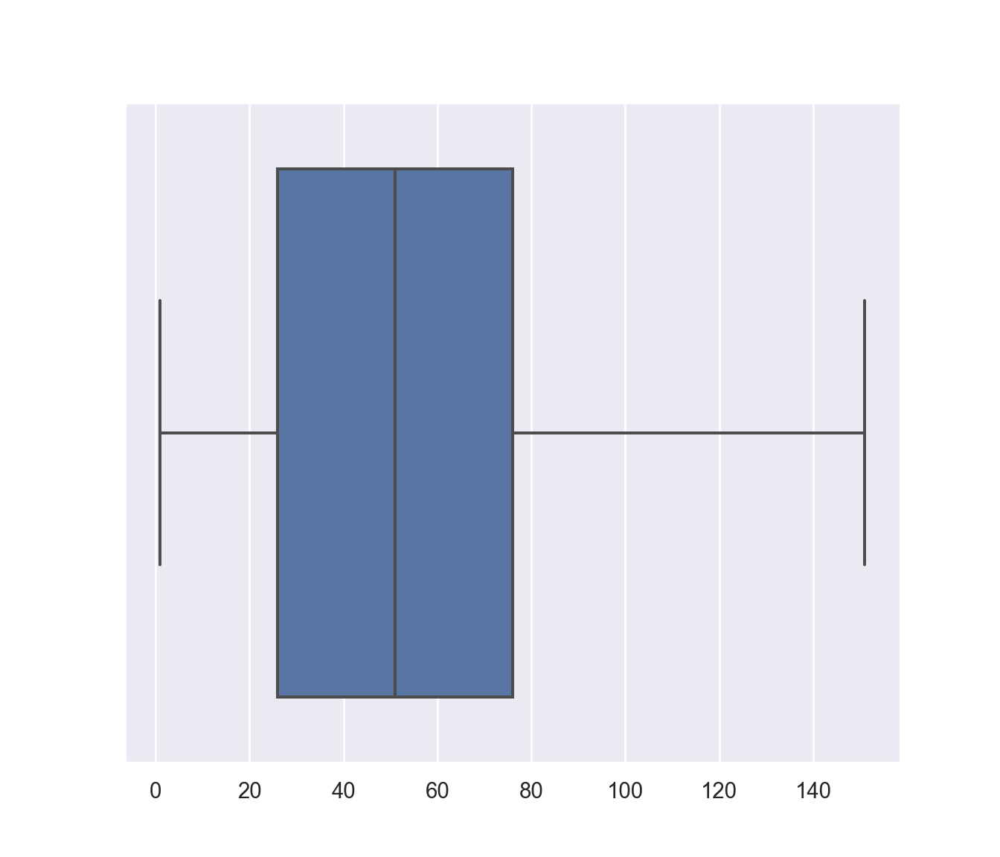
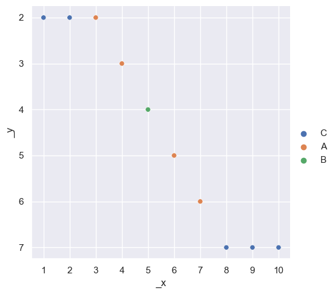

Chapter 7 Visualisierung mit Seaborn
7.1 Swarmplots
import matplotlib.pyplot as plt
import numpy as np
import seaborn as sns
sns.set_theme()
sns.set_context("paper")
plt.tight_layout()
fig, ax = plt.subplots( figsize=(7,6))
ax.set_title("Swarmplot")
data = np.random.uniform(1,100, size=500)
sns.swarmplot(x = data)
7.2 Histogramme
import matplotlib.pyplot as plt
import seaborn as sns
sns.set_theme()
x_werte = [1, 2, 2, 3,3, 4, 5, 6, 7, 8, 9, 10]
sns.set()
sns.histplot(x = x_werte,
#binwidth=1,
#bins="auto",
bins=[0,2,5,7,10],
kde = False)
7.3 Percentile
Nähere Informationen finden sie unter https://numpy.org/doc/stable/reference/generated/numpy.percentile.html-
import matplotlib.pyplot as plt
import seaborn as sns
data = np.arange(1,101)
percentiles = np.percentile( data, [0,25,50,75,100])
print( "Pericentile : ", percentiles)Ausgabe:
#> Pericentile : [ 1. 25.75 50.5 75.25 100. ]7.4 Boxplots
Link: https://seaborn.pydata.org/generated/seaborn.boxplot.html
Link: https://towardsdatascience.com/understanding-boxplots-5e2df7bcbd51
Vertiefung:
import matplotlib.pyplot as plt
import numpy as np
import seaborn as sns
data = np.arange(1,101)
data = np.concatenate( (data, [151]) )
percentiles = np.percentile( data , [0,25,50,75,100])
IQR = (percentiles[3] - percentiles[1])
print( "Pericentile : ", percentiles)
print( "IQR : ", IQR)
print( "Upper Outlier Limit : ", percentiles[3] + 1.5*IQR)
sns.boxplot(x = data) Ausgabe:
Ausgabe:
#> Pericentile : [ 1. 26. 51. 76. 151.]
#> IQR : 50.0
#> Upper Outlier Limit : 151.0
7.5 Relplot
import matplotlib.pyplot as plt
import numpy as np
import seaborn as sns
data = np.array([
[ 1, 2,"C"],
[ 2, 2,"C"],
[ 3, 2,"A"],
[ 4, 3,"A"],
[ 5, 4,"B"],
[ 6, 5,"A"],
[ 7, 6,"A"],
[ 8, 7,"C"],
[ 9, 7,"C"],
[10, 7,"C"]])
x_data = data[:,0]
y_data = data[:,1]
type = data[:,2]
sns.relplot(x=x_data, y=y_data, hue=type)